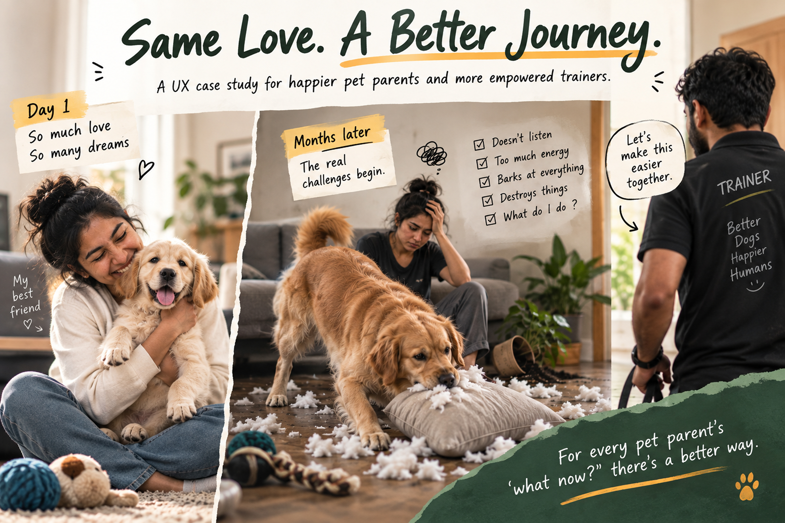
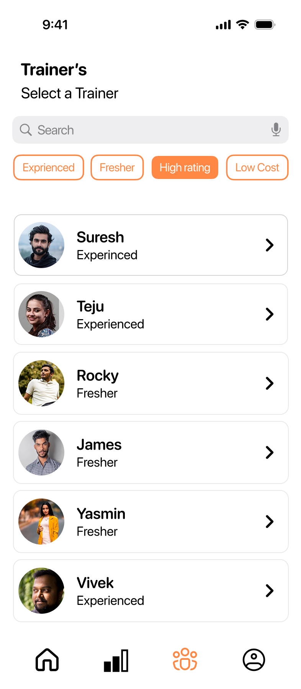
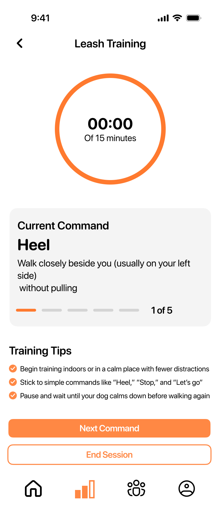
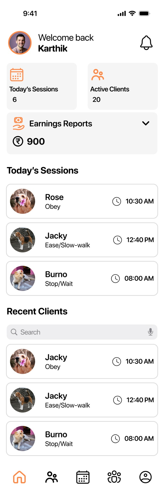
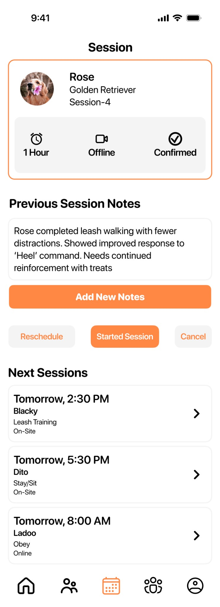
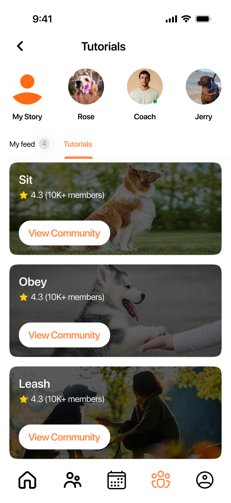
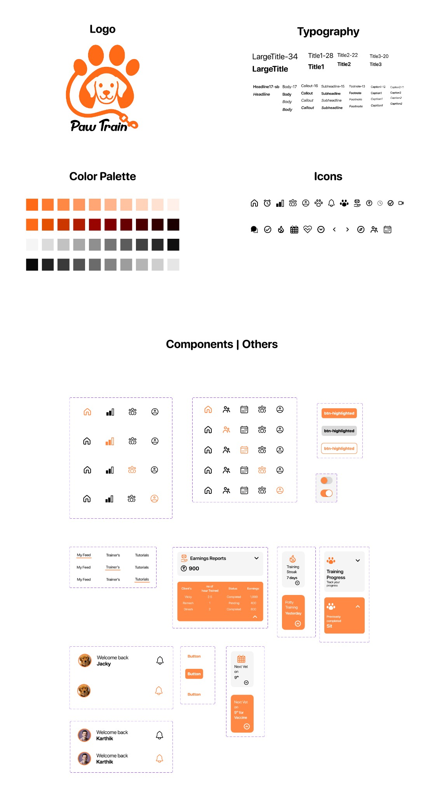

For pet parents
Care tasks, training guidance and reminders can be spread across different places. It becomes harder to know what to do next and keep a routine.
UX/UI case study · Pet care & training
A pet-training experience built to help pet parents stay on track—and help trainers spend less time managing work and more time training.

The home screen keeps the next useful action close.
The product principle
Pet parents and trainers have different jobs, but their progress depends on the same training relationship.
Pet parents may begin without enough practical knowledge of care or training. When the day-to-day reality becomes difficult, routines can break down—and pets can suffer.
Care tasks, training guidance and reminders can be spread across different places. It becomes harder to know what to do next and keep a routine.
Client details, session schedules and progress notes need to be managed alongside the actual training work.
Problem framing informed by feedback from online pet communities and responses to a survey form. These inputs are exploratory, not proof of market size or abandonment rates.
I used community feedback and survey responses to understand where pet parents need support and where trainers lose time managing the process.
Review feedback and real questions shared by pet parents in online communities.
Look for recurring needs around routines, guidance, trainer access and coordination.
Bring key actions, client information and training context into clearer workflows.
Make the next step easy to find for pet parents, while giving trainers a clearer view of clients and sessions.
The owner experience supports everyday care and guided practice. The trainer experience supports client handling, scheduling and session continuity.
Side one
Side two
04 / Selected interface
Each screen below uses the supplied design. The notes explain the decisions you provided; the pet-profile note is a design interpretation based on the visible interface.

Pet parent · Home
The home screen brings key routine information and frequent actions together. The goal is to reduce extra steps—especially for older users who may not want to move through several screens to complete a basic task.
Decision supplied by designer
Pet parent · Profile
The screen groups the owner's profile, pet information, notification preferences and account action in one place. This creates a clear home for reviewing pet details and managing routine reminders.
Design interpretation from screen
Pet parent · Trainer discovery
Trainer needs differ. Search and filters make it easier to narrow options by experience, rating or cost instead of assuming everyone wants the same type of trainer.
Decision supplied by designer
Pet parent · Guided training
The session view focuses on the current command, a timer, concise tips and a clear next action. It is designed to support practice without asking the user to navigate through extra content mid-session.
Decision supplied by designer
Trainer · Client management
Search and filter controls help trainers find clients by name or category, while the list keeps the main client records visible and scannable.
Decision supplied by designer
Trainer · Dashboard
The dashboard brings today's sessions, active clients and earnings information into one overview so the trainer can quickly orient themselves before opening individual records.
Decision supplied by designer
Trainer · Session details
Session details include space for notes and visible session information. Keeping observations with the session gives the trainer context to refer to when planning the next appointment.
Decision supplied by designer
Learning · Community & tutorials
The community and tutorial area surfaces training commands and learning content alongside community activity, supporting pet parents as they look for practical guidance.
Decision supplied by designerThe supplied design-system board documents PawTrain's visual language and reusable UI components. It provides a shared base for repeated controls and patterns across the product.

It was making the connection between pet parents and trainers easier to maintain: clearer next steps for the owner, and better-organised context for the trainer.
A two-sided product isn't two separate experiences. It is one relationship, supported from two different sides.
This case study documents the research approach and design decisions represented in the supplied materials. No usability-test outcomes, business results or measured behaviour-change claims are presented because those results were not provided.